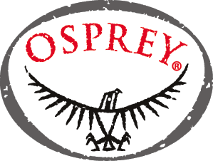

Sponsors and Media
(Last updated 12th August 2010)
The 9th World Rogaining Championships (WRC2010) is being organised by the New Zealand Rogaining Association (NZRA) on behalf of the International Rogaining Association (IRF). For more on the sport of Rogaining world-wide see the IRF website.
Sponsors
The contact address for all sponsorship enquiries is admin@wrc2010.org.nz the organisers.
|  |
 |
 |


Media
The media contact person for the World Rogaining Championships (WRC2010) is the organisers. Event Director, Peter Squires at peter.squires@wrc2010.org.nz. Alternatively send an enquiry to admin@wrc2010.org.nz.
- 11th January 2009
- The International Rogaining Association (IRF) announces that the 9th World Rogaining Championships will be held in New Zealand on the 20th – 21st November 2010. More…
- 11th January 2009
- The International Rogaining Association (IRF) backgrounds the sport of Rogaining supported by some interesting facts. More…